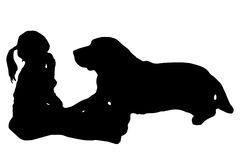
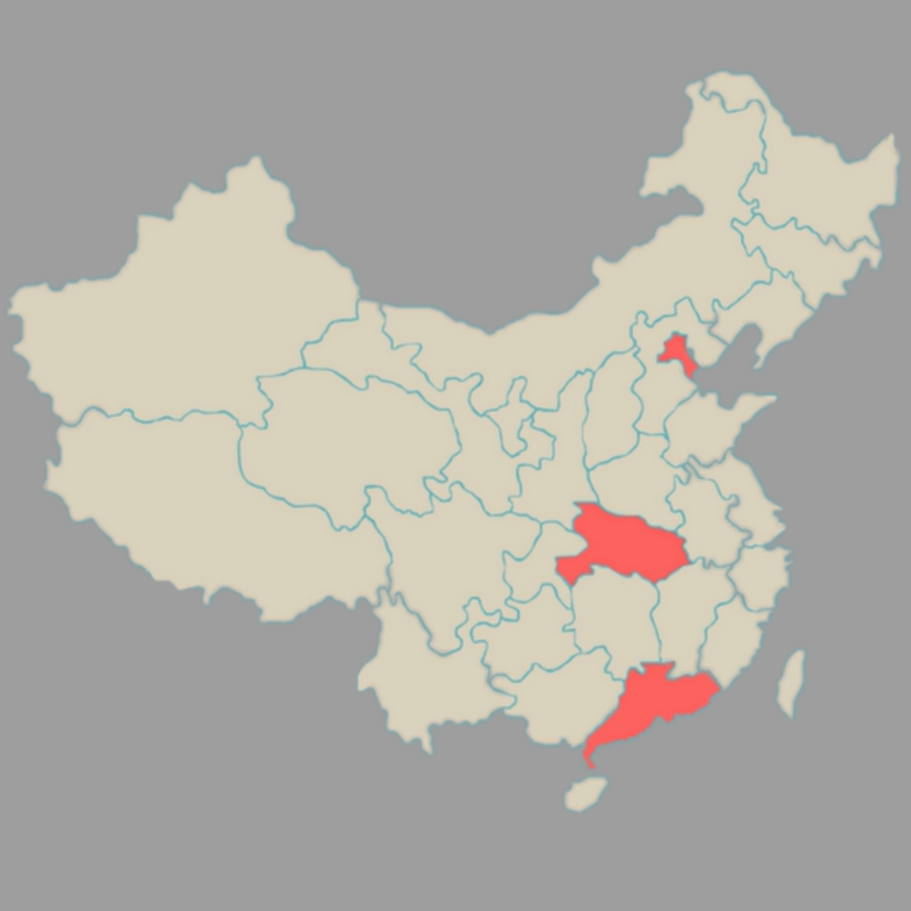
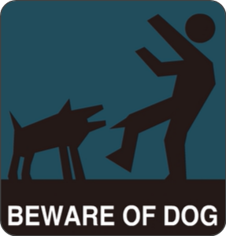
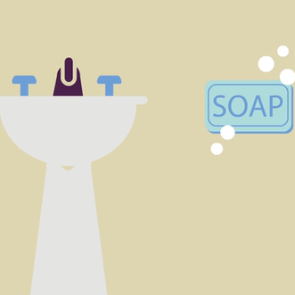

- 1
- 2
- 3
我叫旺财，我是一只普普通通的中国狗,过去人们很爱我。
由于人口老龄化
成为老人精神寄托
由于计划生育政策

成为独生子的玩伴
其中北京、武汉、广州的居民表示自己钟爱某种宠物。

我没料到，因为人们的爱，旺财的同类越来越多。
从2003年到2013年，我的同类增长了500%。
而2012年中国宠物狗跃居世界第一位。
现如今，越来越多的人开始远离旺财。
因为......
这些因素给大家造成了很多麻烦。
其中咬人和排便最让人们感到苦恼不已。
尤其是一种叫狂犬病的东西，让人们闻风丧胆。


2012年
我国27个省份报告
狂犬病病例1425例
死亡1361例
目前我国狂犬病疫情主要分布在南方地区。
报告发病数前五的省份依次为广西、广东、湖南、贵州、河南。
狂犬病是人畜共患的世界性疾病，也是迄今为止人类病死率高达100%急性传染病。
出于对狂犬病的恐惧，群体性捕杀犬只的行动时有发生。
而这并不是根除狂犬病的有效办法。
预防方法
Method One
推动政府大规模为犬只疫苗接种。
Method Two
组织培训，使人们意识到捕杀犬只并不能组织狂犬病的蔓延。
Method Three
给狗接种疫苗，避免不必要的捕杀。

Method Four
在与疑似患有狂犬病的动物接触后，立即用肥皂和水清创。
因为狂犬病，旺财看到越来越多的伙伴流离失所，有些不安。
平均四只狗中就有三只无家可归。
可是旺财也只是一只狗，也需要被规范管理。
狗是人类最忠诚的朋友，旺财希望人类能和我们和谐相处。
01
规范管理1
给狗狗带上项圈和放咬人口套，并由主人牵着。
02
规范管理2
逛街时对狗狗做出严格限制，否则主人将被罚款。
03
规范管理3
狗主人必须负责清理狗屎，否则将收到重罚。
04
规范管理4
狗狗每年必须注射疫苗，违者重罚。